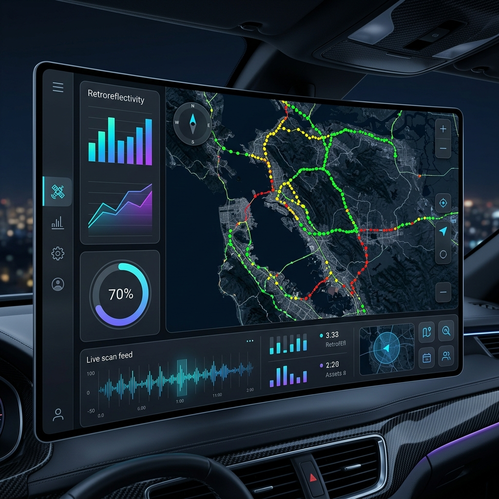

AERO-REFLEX AI is a vehicle-mounted system that measures retroreflectivity of road signs and markings in real-time at up to 80 km/h — combining optical physics, LiDAR sensing, and deep learning.
Manual retroreflectivity measurement exposes workers to danger, creates traffic delays, and cannot scale across India's vast highway network.
Personnel must work on active highways with handheld devices, creating dangerous exposure to high-speed traffic.
Manual measurement requires lane closures, causing traffic disruption and limiting the number of assets inspected per day.
Results vary with weather, operator skill, and environmental conditions — no standardized real-time monitoring exists.
AERO-REFLEX operates through a multi-layer architecture — from raw sensor capture to AI-driven classification.
High-speed global shutter cameras, IR illumination, and LiDAR capture raw sensor data at highway speeds.
Converts raw pixel values to physical luminance using opto-electronic calibration and polynomial mapping.
Deep learning detects, segments, and classifies assets while atmospheric models correct for environmental interference.
Commercial off-the-shelf components engineered for reliability, accuracy, and cost efficiency.
5MP Global Shutter CMOS
Distortion-free capture at high speed
905nm Solid-State
Distance + fog detection
IR LED (850–940nm)
Controlled retroreflective lighting
NVIDIA Jetson Orin Nano
Edge AI processing unit
GNSS + IMU
Sub-meter geotagging accuracy
From photon emission to actionable intelligence — the complete data flow of AERO-REFLEX AI.
IR LED array projects calibrated light at 850–940nm toward road surface and signs.
Global shutter CMOS camera captures distortion-free frames at high frame rate.
LiDAR returns precise distance to each detected surface for geometry calculation.
Pixel intensities are converted to physical luminance using polynomial mapping.
YOLO identifies traffic signs and markings; segmentation isolates reflective surfaces.
Retroreflectivity R is calculated from luminance, illumination, and observation angle.
Atmospheric transmittance model compensates for fog, rain, and ambient conditions.
Corrected values are classified as Good, Fair, or Poor against regulatory thresholds.
Geotagged JSON output is stored locally and transmitted to the cloud dashboard.
A multi-stage AI pipeline for real-time detection, segmentation, recognition, and tracking of road assets.
YOLO-based real-time detection identifies traffic signs, road markings, and road studs at highway speed.
YOLOv8 · Real-TimePixel-level segmentation extracts only retroreflective surfaces, removing background noise for accurate measurement.
Semantic SegmentationOptical character recognition reads text on signs, enabling automatic asset identification and inventory tracking.
OCR · Asset IDTracks the same object across consecutive frames to improve measurement stability and reduce transient noise.
Object TrackingPhysics-based atmospheric correction ensures accuracy in fog, rain, night, and wet surface conditions.
Fog and particulate matter scatter light, reducing apparent intensity. AERO-REFLEX corrects for this using the Beer-Lambert law to restore true retroreflectivity values.
Where β is the extinction coefficient (fog density) and d is distance to target measured by LiDAR.
| Condition | Primary Sensor |
|---|---|
| Clear / Night | Camera |
| Moderate Fog | Camera + LiDAR |
| Dense Fog | LiDAR Only |
Every detected asset is classified against regulatory thresholds with automated maintenance recommendations.
Retroreflectivity meets or exceeds minimum requirements. No action needed.
Below optimal but functional. Schedule cleaning or minor maintenance.
Critical safety risk. Immediate replacement or repair required.
Structured geotagged data feeds into a cloud dashboard for visualization, alerts, and maintenance planning.
{
"Asset_ID": "SIGN_402",
"Type": "Warning",
"Reflectivity": "120 mcd/lx/m²",
"Status": "RED_FAIL",
"GPS": [28.6139, 77.2090],
"Weather": "Foggy",
"Timestamp": "2026-04-23T10:15:00Z"
}

Engineered for nationwide deployment across all highway types with commercial off-the-shelf hardware.
Eliminates handheld retroreflectometers and personnel exposure on active highways.
No lane closures, no worker exposure. Vehicle drives at normal highway speed.
Day, night, fog, rain — atmospheric correction models ensure consistent accuracy.
Instant geotagged output with live dashboard alerts for critical failures.
Deploy across India's entire highway network with fleet-ready vehicle mounts.
Software-driven calibration with off-the-shelf hardware minimizes total cost.
Embed AERO-REFLEX sensors into autonomous inspection platforms.
AI models forecast sign degradation before failures occur.
Push critical visibility warnings to connected vehicles.
Aerial drone-based survey for remote and inaccessible areas.
Deploy AERO-REFLEX AI across your highway network and start measuring retroreflectivity at scale — safely and automatically.